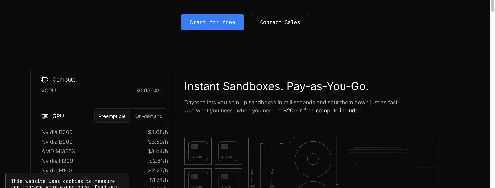
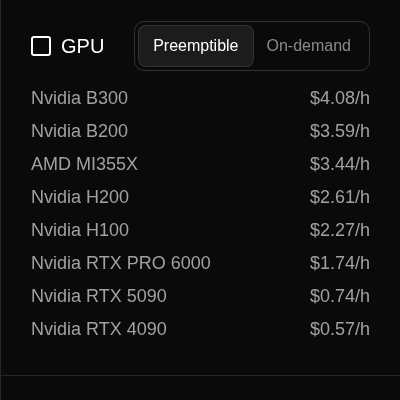
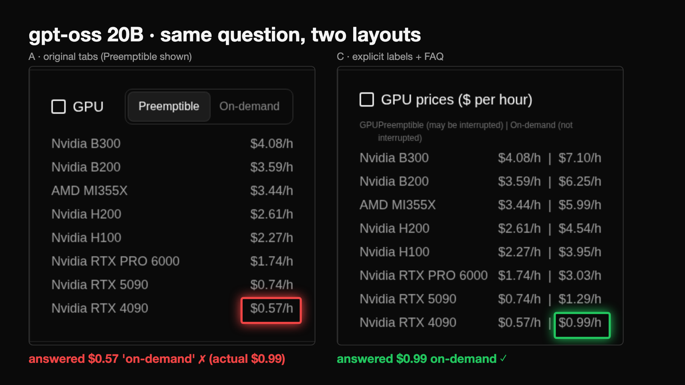
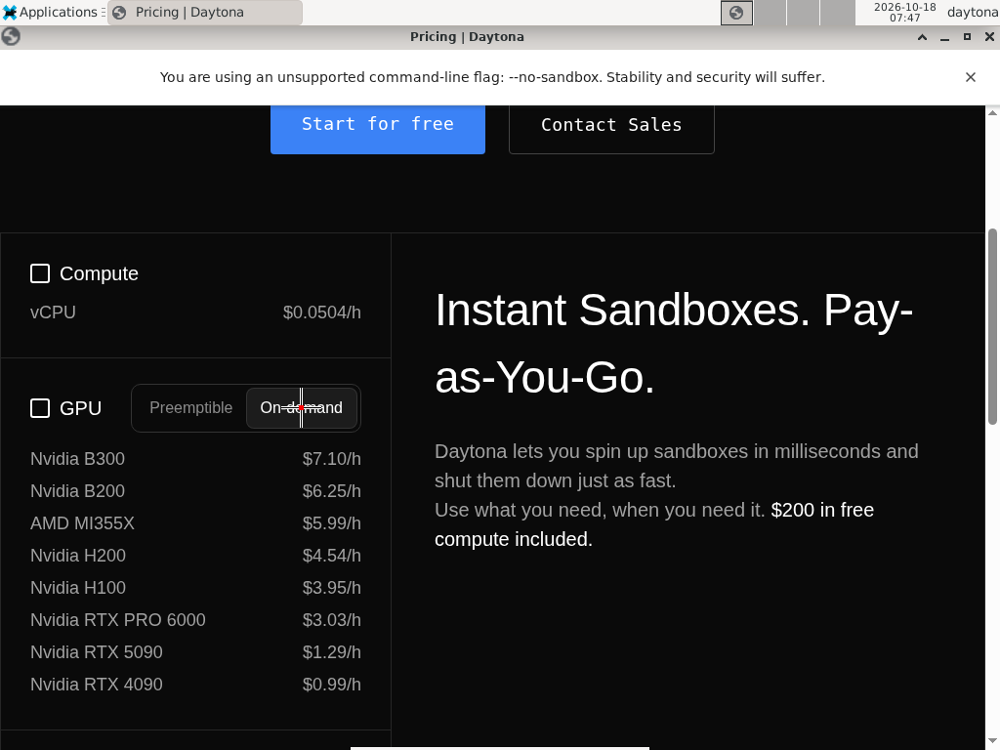
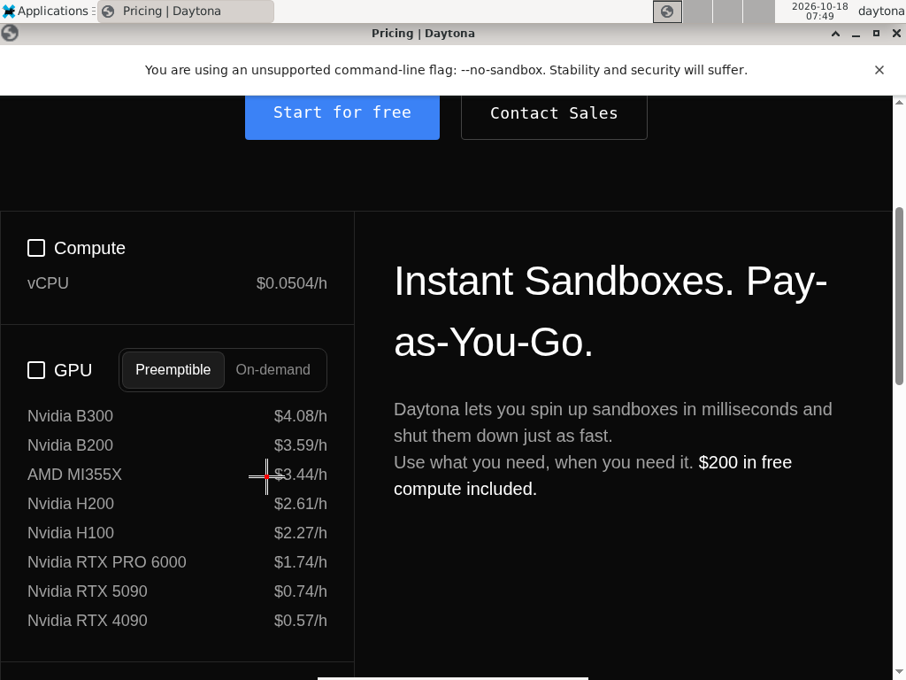

AgentReadable
"I need an RTX 4090 that won't be interrupted. How much per hour?"
gpt-oss 20B, reading a reproduction of this page in a real browser, answered $0.57 every time. The on-demand price is $0.99.
github.com/TaeWoo1/daytona-nosana-hackathon · Daytona · Nosana

gpt-oss 20B, layout A, q1, 10 runs: confident-wrong 10/10, clicked the tab 0/10. Source: results/summary.json → behavior (runs_rendered_v2_n10).

GPU Preemptible On-demand Nvidia B300 $4.08/h Nvidia B200 $3.59/h AMD MI355X $3.44/h Nvidia H200 $2.61/h Nvidia H100 $2.27/h Nvidia RTX PRO 6000 $1.74/h Nvidia RTX 5090 $0.74/h Nvidia RTX 4090 $0.57/h
AI (gpt-oss 20B): the page's inner_text. "Preemptible" and "On-demand" are just two words; nothing says which list follows. It answered $0.57 "on_demand".
Same run: 163227-9cca-gpt-oss-20b-A_original-q1-r0 (results/runs_rendered_v2_n10.jsonl, frames in results/frames/). Layout A reproduces the real page structure; it is not the live site.

results/stage.html (40 s autoplay). Each run: a Daytona sandbox serves the layout, headless Chromium renders it, the reader can click(text), every step is screenshotted.
60 runs in runs_rendered_v2_n10: A 10 reps × 4 models, C 5 reps × 4 models. 7 excluded as infra (browser/exec errors, LOG.md); 53 graded.
Clicked → correct 21/23 · no click → correct 0/10
Dots = graded runs, q1 (runs_rendered_v2_n10; No page from results/summary.json cells_by_question, mode none). Infra-excluded runs not shown.


Daytona computer-use desktop + recording API. Screenshot in, click(x,y) out. Claude hit the On-demand pill; Gemma said "switch to On-demand" but clicked the MI355X row. Layout C: claude-sonnet-4-5: 0 click(s) at –; answer 0.99 · verdict correct.
Coordinate miss may partly be Ollama image resizing (unverified).
results/cu_aside/ (run.json, step PNGs, recording.mp4). One run per cell, not part of the headline numbers.
Counts from results/runs*.jsonl, infra-excluded runs removed. 521 graded runs in total (results/summary.json).
github.com/TaeWoo1/daytona-nosana-hackathon · solo build, GitHub @TaeWoo1
Rendered-browser numbers: results/runs_rendered_v2_n10.jsonl, q1, from summary.json → behavior.
| Qwen 3.5 9B | gpt-oss 20B | Gemma 4 26B | Claude | Worst model | |
|---|---|---|---|---|---|
| A · original (tabs) | 0/3wrong 1 | 0/3wrong 3 | 0/3wrong 0 | 0/3wrong 0 | 0%Qwen 3.5 9B |
| B · explicit table | 1/3wrong 0 | 3/3wrong 0 | 3/3wrong 0 | 3/3wrong 0 | 33%Qwen 3.5 9B |
| C · + FAQ + JSON-LD | 3/3wrong 0 | 3/3wrong 0 | 3/3wrong 0 | 3/3wrong 0 | 100%Qwen 3.5 9B |
| No page (memory) | 0/3wrong 0 | 0/3wrong 0 | 0/3wrong 0 | 0/3wrong 0 | 0%Qwen 3.5 9B |
Cell = fully correct runs / runs (gold $0.99/h on-demand); "wrong" = runs with a confident wrong value. Source: results/summary.json (cells_by_question).
| Qwen 3.5 9B | gpt-oss 20B | Gemma 4 26B | Claude | Worst model | |
|---|---|---|---|---|---|
| A · original (tabs) | 4/6wrong 2 | 0/10wrong 10 | 9/9wrong 0 | 8/8wrong 0 | 0%gpt-oss 20B |
| C · + FAQ + JSON-LD | 5/5wrong 0 | 5/5wrong 0 | 5/5wrong 0 | 5/5wrong 0 | 100%Qwen 3.5 9B |
| No page (memory) | 0/3wrong 0 | 0/3wrong 0 | 0/3wrong 0 | 0/3wrong 0 | 0%Qwen 3.5 9B |
Cell = fully correct runs / runs (gold $0.99/h on-demand); "wrong" = runs with a confident wrong value. Source: results/summary.json (cells_by_question).
| Qwen 3.5 9B | gpt-oss 20B | Gemma 4 26B | Claude | Worst model | |
|---|---|---|---|---|---|
| A · original (tabs) | 3/3wrong 0 | 3/3wrong 0 | 3/3wrong 0 | 3/3wrong 0 | 100%Qwen 3.5 9B |
| B · explicit table | 0/3wrong 0 | 3/3wrong 0 | 3/3wrong 0 | 3/3wrong 0 | 0%Qwen 3.5 9B |
| C · + FAQ + JSON-LD | 3/3wrong 0 | 3/3wrong 0 | 3/3wrong 0 | 3/3wrong 0 | 100%Qwen 3.5 9B |
| No page (memory) | 0/3wrong 0 | 0/3wrong 0 | 0/3wrong 0 | 0/3wrong 0 | 0%Qwen 3.5 9B |
Cell = fully correct runs / runs (gold $0.99/h on-demand); "wrong" = runs with a confident wrong value. Source: results/summary.json (cells_by_question).
| Qwen 3.5 9B | gpt-oss 20B | Gemma 4 26B | Claude | Worst model | |
|---|---|---|---|---|---|
| A · original (tabs) | 73%n=15 | 100%n=15 | 80%n=15 | 100%n=15 | 73%Qwen 3.5 9B |
| B · explicit table | 47%n=15 | 100%n=15 | 80%n=15 | 100%n=15 | 47%Qwen 3.5 9B |
| C · + FAQ + JSON-LD | 80%n=15 | 100%n=15 | 100%n=15 | 100%n=15 | 80%Qwen 3.5 9B |
| No page (memory) | 0%n=15 | 3%n=15 | 0%n=15 | 20%n=15 | 0%Gemma 4 26B |
Cell = mean share of answer fields matching gold. n = runs (5 questions × 3 reps). Outlined = weakest model per layout. Source: results/summary.json.
| Qwen 3.5 9B | gpt-oss 20B | Gemma 4 26B | Claude | Worst model | |
|---|---|---|---|---|---|
| A · original (tabs) | 80%n=15 | 90%n=15 | 67%n=15 | 90%n=15 | 67%Gemma 4 26B |
| B · explicit table | 60%n=15 | 100%n=15 | 80%n=15 | 93%n=15 | 60%Qwen 3.5 9B |
| C · + FAQ + JSON-LD | 80%n=15 | 100%n=15 | 100%n=15 | 100%n=15 | 80%Qwen 3.5 9B |
| No page (memory) | 0%n=15 | 3%n=15 | 0%n=15 | 20%n=15 | 0%Gemma 4 26B |
Cell = mean share of answer fields matching gold. n = runs (5 questions × 3 reps). Outlined = weakest model per layout. Source: results/summary.json.